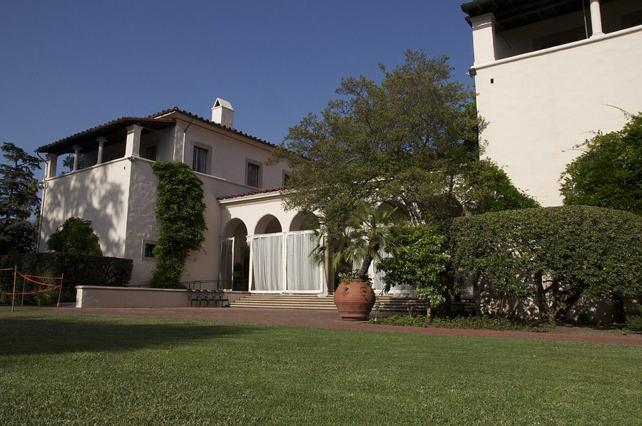
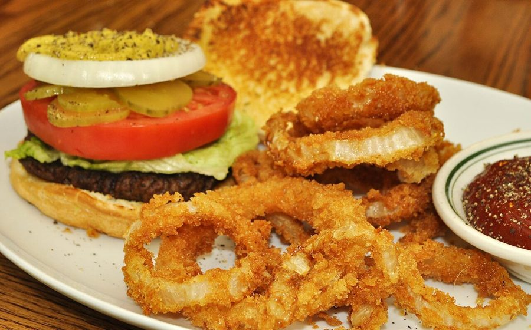
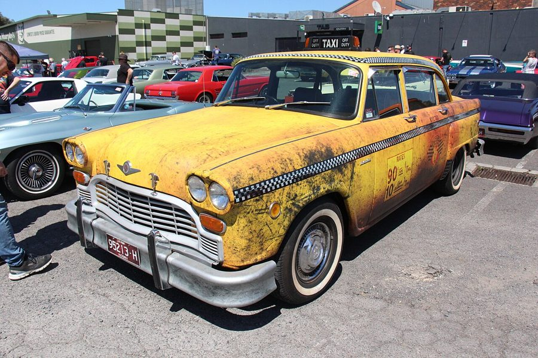
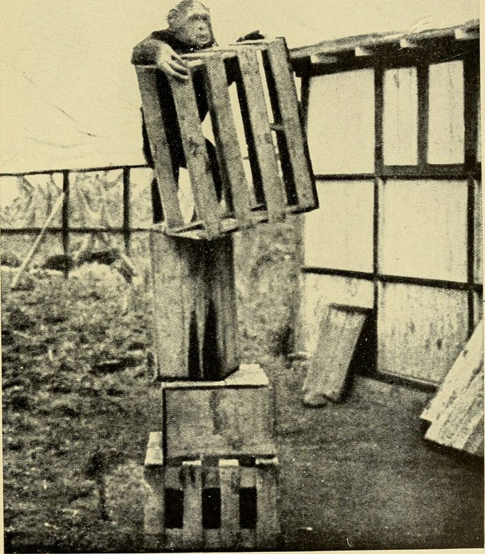
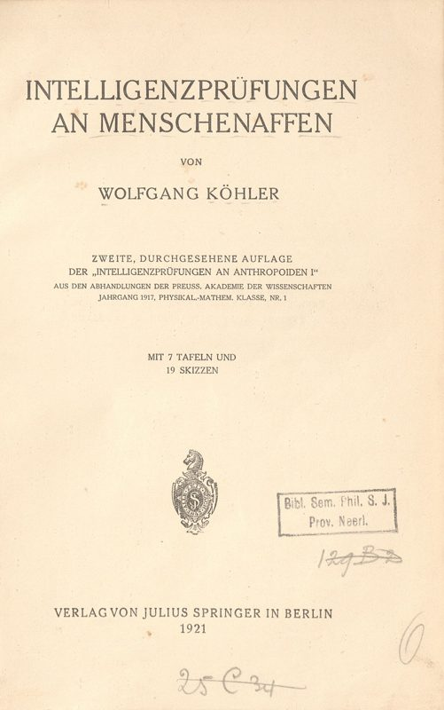
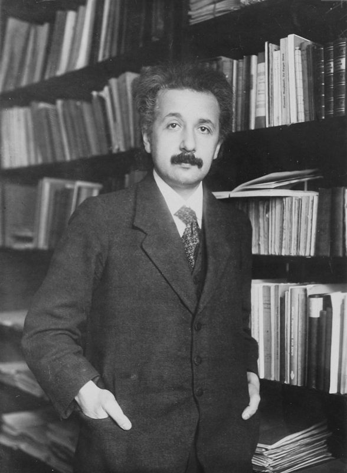

这一章在做什么
作者第一次敲开费曼的门，几天后又在食堂和他单独吃了一顿饭。全章几乎没有物理，是一场紧张的对话：作者心里想问「我够不够格」，说出口的却是一个猩猩的故事。
读的时候盯住费曼的每句回话：短，直，有时像泼冷水。结尾那一句是全章的落点。
背景：作者默认你知道的事
这一章的难处不在物理，在美国生活和几个一笔带过的名字。
两个吃饭的地方：Athenaeum 和 the Greasy

加州理工的 Athenaeum（教授俱乐部），第 3 章里系主任提过它。
Nick Webb，CC BY 2.0，维基共享资源
Athenaeum 是教授俱乐部，男士常穿西装去吃饭。the Greasy 是校内食堂的外号，greasy 是「油腻腻的」。美国人管又便宜又油的小馆子叫 greasy spoon，这个外号是同一路。费曼去哪边吃，等于表明他是哪种人。
本站示意图。第 7 段作者问「去哪个」，费曼只回了一个眼神。

汉堡配洋葱圈（onion rings，裹面糊油炸的洋葱）。作者点了两个汉堡，一份配薯条，一份配这个。这是一张普通的示意照片，不是加州理工的食堂。
jeffreyw，CC BY 2.0，维基共享资源
「布鲁克林的退休出租车司机」

Checker 牌出租车，1980 年款。这种方头方脑的黄车是老纽约出租车的样子。
Sicnag，CC BY 2.0，维基共享资源
布鲁克林是纽约的一个区，过去是工人和移民聚居的地方，口音重，说话直。这个说法在美国人心里就是「最普通的纽约老头」。费曼在纽约皇后区的法洛克威长大，一辈子带着纽约口音，和盖尔曼的考究正好相反。
科勒和他的黑猩猩

1928 年一本科普书里的插图：黑猩猩把箱子摞起来往高处够。科勒做的就是这一类实验。
Internet Archive Book Images，公有领域，维基共享资源

科勒这本书的德文版扉页，1921 年第二版。英译本书名是 The Mentality of Apes。
Wolfgang Köhler，公有领域，维基共享资源
沃尔夫冈·科勒（Wolfgang Köhler，书里拼作 Koehler）是德国心理学家。他观察黑猩猩怎样「突然想通」：拿棍子够香蕉，摞箱子够高处。Nueva 是其中一只。史实上他的观察站在西班牙的特内里费岛；书里那段是作者讲给费曼听的戏剧化版本。
本站示意图。第 31 段作者从故事里总结出的道理，画出来就是这样。两条竖线是笼子的栏杆。
1914 年的爱因斯坦

爱因斯坦，1916 年，在荷兰莱顿朋友埃伦费斯特家的书房。广义相对论刚完成不久。
Paul Ehrenfest，公有领域，维基共享资源
1905 年爱因斯坦发表狭义相对论，之后花了十年想把引力也纳进来。1914 年春他搬到柏林，1915 年 11 月才完成广义相对论，中间多次走错路。作者讲故事掐的就是这个「还没做出来、正在受挫」的时间点。
本站示意图，间隔不按比例。书里说爱因斯坦离突破「还有两年」，史实是 1915 年 11 月完成，1916 年发表完整论文。
库斯勒的书，伽利略的望远镜
阿瑟·库斯勒，1969 年。
Eric Koch for Anefo，CC BY-SA 3.0，维基共享资源
阿瑟·库斯勒（Arthur Koestler，1905–1983）是匈牙利出生的英国作家。The Act of Creation（1964）讨论「创造是怎么发生的」，主张新想法来自把两套原本不相干的思路接到一起。作者讲的猩猩故事就是从这本书里读来的。
 伽利略亲手做的两支望远镜，1609–1610 年前后，现存佛罗伦萨伽利略博物馆。
Zde，CC BY-SA 4.0，维基共享资源
伽利略亲手做的两支望远镜，1609–1610 年前后，现存佛罗伦萨伽利略博物馆。
Zde，CC BY-SA 4.0，维基共享资源
望远镜 1608 年前后出现在荷兰。伽利略 1609 年听说后自己做了一架，把它对准夜空，看到了月面的山和木星的卫星。书里说望远镜本是「玩具」，那是作者的说法。
词与短语
词条按在书里出现的顺序排。斜体小字是它所在的那句话里的几个词，方便你在纸质书上找到。
set eyes on / upon
… I FIRST SET eyes upon him, …
（第一次）见到
比 see 正式，多用于「头一回见」。upon 就是 on。
gaunt
… but he looked gaunt and aged. …
瘦削憔悴的
因病或劳累瘦得脱了形。aged 在这里是形容词：显老。
his step
… his step lacking in energy. …
他的步子、步态
step 不是「步骤」。这半句省了 was：his step (was) lacking in energy。
state of mind
… With my state of mind at …
心境，精神状态
作者说自己那阵子消沉，看上去可能也有点像费曼。
malaise
… but Feynman’s malaise was unlike my …
身体不适，萎靡
读 /məˈleɪz/。作者的是心病，费曼的是真病。
common knowledge
… It was common knowledge by then …
人人都知道的事
不是「常识」（那是 common sense）。指「大家都听说了」。
terminally ill
… that Feynman was terminally ill. In …
患了绝症，治不好了
terminal 这里是「末期的」，和电脑终端无关。下一段有 terminal cancer。
marathon（形容词）
… in a marathon fourteen-hour procedure. …
漫长而耗人的
名词当形容词用：a marathon meeting 马拉松式的会。
procedure
… fourteen-hour procedure. It had been his …
手术
医院里 procedure 指一次手术或医疗操作，不是「流程」「过程」。
step over to
… I stepped over to his office, …
走几步过去
over 表示「到那边去」，暗示很近。同类：walk over、come over。
being one
… find that being one did not …
身为一个将死的人
one 指上一句的 a dying person。整句：和将死之人说话让我不自在；而他自己就是将死之人，却没有不自在。
right away
… I could see right away that …
马上，一眼就
和「右边」「离开」都无关。= immediately。
an energy about him
… still an energy about him, a …
他身上有股劲儿
about + 人：这个人身上带着的气质。There's something about her.
may have … but
… He may have had terminal cancer, …
他固然得了……，但是
may 在这里不表示「可能」，是让步：事实如此，但后半句才是重点。
zigzag
… spirit still zigzagged around the universe. …
走之字形，四处乱窜
作者的比喻：他的精神还在满宇宙跑。
make an impression
… surprised at the impression he made. …
他给人的印象
印象用 make。the impression (that) he made 是定语从句。
distancing sheen of brilliance
… have that distancing sheen of brilliance …
那层让人不敢靠近的天才光泽
sheen 是表面的光泽；distancing 是「把人推远的」。说的是盖尔曼有、费曼没有的东西。
run into
… If I had run into him …
偶然碰见
不是「撞上」。下面第 4 段的 bump into 是同一个意思。
a retired cab driver from Brooklyn
… a retired cab driver from Brooklyn. …
布鲁克林的退休出租车司机
cab = taxi。意思是「看着就是个普通纽约老头」，见上面的背景。
earthy
… possessed a certain earthy sexuality. …
粗朴直率的，不斯文的
earth（土）来的词：接地气，带点野。earthy sexuality 是那种不加修饰的男性魅力。
see you around
… he mumbled a “see-you-around” and looked …
「回头见」
随口的告别，不是约定再见面。用连字符连起来、前面加 a，是把整句话当一个名词。mumble 是含糊地嘟哝。
bump into
… later I bumped into Feynman outside …
碰巧遇到
bump 本义是撞，这里没有真的撞。
server
… and the servers were students, the …
（餐厅的）服务员
不是服务器。美国餐厅里 server 就是端盘子的人。
back then
… the cafeteria back then was an …
那时候，当年
back 指「回到过去」。下一段的 in those days 同义。
joint（地方）
… was an unremarkable joint with food …
（不讲究的）小馆子，地方
口语。a burger joint 汉堡小店。第 4、6 章里的 joint 是另一个意思：大麻烟卷。
mess hall
… in an army mess hall. It …
军队食堂
mess 在军队里指集体伙食，和「乱糟糟」不是一回事。
the Greasy
… more descriptive nickname, “the Greasy.” …
「油腻馆」（食堂的外号）
形容词前加 the 当名字用。more descriptive 是反话式的幽默：这个外号更「写实」。
give someone a look
… Feynman gave me a look. Apparently, …
瞪了我一眼，给了个眼色
不是「看了一眼」那么中性。a look 带着态度：你说呢？
not his style
… the Athenaeum wasn’t his style. …
不是他的路数，他不喜欢那一套
novel（形容词）
… had a novel way of cooking …
新奇的，别出心裁的
不是「小说」。这里是反话：做法「别致」，其实很糟。
flip
… they would flip it off one …
（用铲子）一挑、一翻
flip it off one of the stacks：从一摞上面挑下一块来。off 是「离开那一摞」。
more or less
… and more or less finish cooking …
差不多，勉强算是
这里带讽刺：「算是」把它煎熟了。
as it turned out
… As it turned out, this culinary …
结果是，后来才知道
turn out = 结果表明。culinary 是「烹饪的」，用这么正式的词说食堂的汉堡，是在开玩笑。
have much in common with
… had much in common with the …
和……有很多相同之处
厨房和微生物实验室的「相同之处」是都在养细菌。
sterile agar
… than the sterile agar used in …
无菌琼脂
实验室里培养细菌用的胶状培养基。sterile = 无菌的。
tepid
… kept half-cooked and tepid for several …
温吞的，不冷不热的
半熟的肉在这个温度放几小时，正适合细菌繁殖。
naïve in the ways of
… Still naïve in the ways of …
还不懂……的门道
ways 是「规矩、门道」。意思是：老手不会在这儿点汉堡，他还一口气点了两个。
draw a crowd
… Feynman usually drew a crowd at …
引来一群人围着
draw 是「吸引」，不是「画」。draw – drew – drawn。
this late
… but this late there wasn’t anyone …
这么晚了
this 作副词 =「这么」。this big 这么大。
break the ice
… to say to break the ice. …
打破冷场，开个话头
my mind was a blank
… My mind was a blank. The …
脑子里一片空白
Cannes
… computer game award in Cannes. Then, …
戛纳（法国南部城市）
读 /kæn/。作者后来做过电脑游戏，这是插进来的一段往后的回忆。接下来的 Then 是「那一次」，不是「然后」。
utter a few lines
… I had uttered a few lines …
说了几句（准备好的）话
lines 是「台词」，不是「线」或「行」。utter = 说出口。
get off easy
… With Feynman I got off easy. …
轻松过关，没受什么罪
本来可能很难堪，结果没有。因为这次是费曼先开口了。
dumb
… That was dumb. I don’t do …
蠢
美式口语里 dumb = stupid，很少用「哑」的本义。
Yeah, well
… “Yeah, well I don’t know what’s …
「嗯，不过嘛……」
口语里用来挡回对方的话。费曼没接「向你学习」这句恭维：我只知道什么对我自己好。
my mind raced
… More silence. My mind raced. I …
脑子飞快地转
race 作动词：飞奔。和上面 a blank 相反。
before long
… I knew that before long, others …
不久，很快
不是「很久以前」。
Read any good books lately?
… “Read any good books lately?” …
「最近读了什么好书吗？」
口语省了开头的 Have you。这是美国人没话找话的老套开场白，作者是在自嘲：憋了半天憋出这么一句。第 18 段的 Learn anything? 同样省了 Did you。
keep the conversation alive
… trying to keep the conversation alive. …
不让谈话冷下去
get … on track
… getting my research on track, and …
让……走上正轨
track 是轨道。have trouble doing = 做某事有困难。
rebuffed
… his question. I felt rebuffed. I …
碰了钉子，被顶了回来
heap
… skins together in a heap with …
一堆
日常英语里 heap 就是乱堆的一堆东西，和内存的「堆」同一个词。
episode
… this episode will be retold in …
这件事，这段经过
不是「一集」。指一段独立的小事件。
interject
… ways to interject the subject of …
插（话）
在别人说话中间插进一句。
hold someone's interest
… my story was holding his interest. …
一直吸引着他
hold = 抓住不放。
won't do
… and banana skins won’t do. As …
不行，不顶用
do 在这里是「够用、合适」。That will do. = 这就行了。
plight
… As Nueva studies her plight, a …
困境
这句是文字游戏：她研究（study）自己的困境，教授研究她。
only（连词）
… bananas to Nueva, only he doesn’t …
只不过，可是
放在句子中间、逗号后面的 only = but。
do someone the favor of
… doesn’t do her the favor of …
行个方便，帮……一个忙
favor 是「帮忙」。他偏不肯行这个方便：不把香蕉放进笼子里。
just out of reach
… bananas are just out of reach. …
差一点点够不着
reach 作名词：手能伸到的范围。第 29 段的 within arm's reach 相反：伸手可及。
nine years into
… Einstein is nine years into his …
已经做了九年
「时间 + into + 某事」= 这件事进行到第几年。
peer-to-peer
… Me and Feynman, peer-to-peer! We were …
平起平坐，同行对同行
peer 是「同等地位的人」，P2P 就是这个词。作者在笑当年的自己：居然觉得和费曼是同辈在交流。We were connecting = 我们聊到一块儿去了。
let someone off the hook
… not letting me off the hook. …
放过某人
hook 是鱼钩。这里是否定：费曼不放过他，还是追着问「你学到了什么」。
disparate
… put the two disparate skills together. …
毫不相干的
读 /ˈdɪspərət/。别和 desperate（绝望的）混。
altogether
… into an altogether different kind of …
完全地
不是「一起」（那是 all together，分开写）。
raw materials
… But the raw materials for the …
原料
比喻：做出发现所需的东西早就摆在那儿了。
a bunch of bullshit
… psychology is a bunch of bullshit.” …
一堆胡扯
粗话。a bunch of 口语里是「一堆」。第 4 章提过他看不上哲学，这里轮到心理学。
look someone in the eye
… he looked me in the eye, …
直视某人的眼睛
表示认真、坦率。eye 用单数。
sly grin
… and with a sly grin, “What …
狡黠的笑
sly 是「有点坏、心里有数」。这个笑告诉你下一句是玩笑，也是好意。
值得停下来的句子
You don’t learn how to discover things by reading books on it.
— 第 33 段，费曼。本站译：怎么做出发现，不是靠读讲这个的书学会的。
You 是泛指「人」，不专指作者。books on it 的 on = about，it 指「怎么发现」这件事。
否定词放在前面（don't learn），否定的其实是方式（by reading）。这是费曼一贯的态度：想学会做，就去做。
What I would learn from your story is that if an ape can make a discovery, so can you.
— 第 34 段，费曼。本站译：换了我，从你这个故事里学到的是：猩猩都能做出发现，你也能。
主语是整个 What I would learn from your story，谓语 is，后面 that 引出内容。would 表示「换成我的话」。so can you 是倒装，= you can too。
ape 是没尾巴的大猿（黑猩猩、大猩猩），和 monkey 不同。这句又损又暖。
本站示意图。第 30 段的 off the hook：字面和实际意思。
检查一下理解
先在心里答，再点开。答错的那题，回书里把对应段落再读一遍。
1. 第 3 段末尾费曼嘟哝的那句 see-you-around，是在约作者下次再聊吗？
不是。这是一句随口的告别，说完他就低头接着干活了。第一次见面很短，费曼客气，但没有多聊的意思。
2. 第 8 段说食堂厨房和微生物实验室「有很多共同点」，是在夸厨房干净吗？
相反。半熟的汉堡在温吞的温度下放几个小时，正好养细菌，所以厨房像个培养细菌的实验室。后半句还补了一刀：实验室用的培养基恐怕比他们的肉还贵。
3. 费曼为什么会对作者「有点不耐烦」（第 21 段）？
他问的是「你学到了什么」，作者答的却是「我为什么去读这本书」。费曼要的是具体内容，所以原样又问了一遍。第 30 段他第三次追问，作者这才真正回答。
4. 第 25 段的 A cruel fellow 是谁说谁？当真吗？
费曼说那位教授：把香蕉放在笼子外面，够坏的。这是听故事时顺口的打趣，说明他听进去了。fellow 在这里是「家伙」，和序言里「同为……的」那个用法不同。
5. 第 28 段「我和费曼，平起平坐！」是作者现在的看法吗？
不是。这是他当时一瞬间的得意，写书时带着自嘲写下来。几段之后费曼就说他在浪费时间，这份得意立刻被打掉了。
6. 费曼最后那句话，是在挖苦作者还是在鼓励他？
两样都有，落点是鼓励。他先否定了「靠读书学会发现」和心理学，再换个角度用作者自己的故事回答了作者没敢问出口的问题：你够格。书里写他是温和地、带着笑说的。